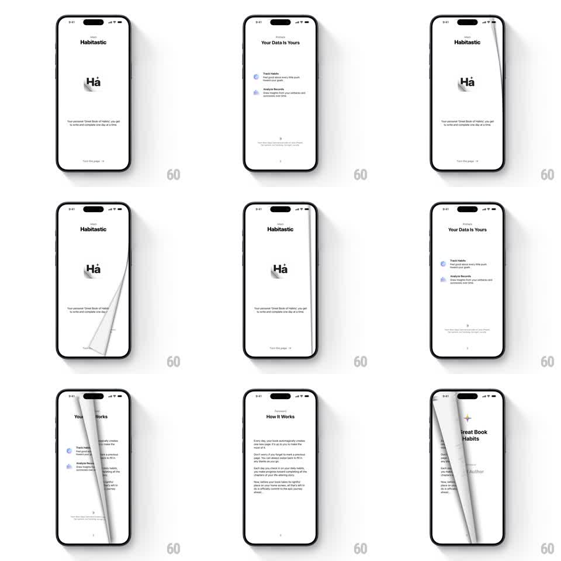

Media
Frame-by-frame

Rebuild this interaction 1:1: Habitastic's book onboarding - each onboarding page turns like a real paper page in a book: the corner lifts, curls across the screen with a soft shadow and page thickness, and settles to reveal the next chapter.

Rebuild this interaction 1:1: Habitastic's book onboarding - each onboarding page turns like a real paper page in a book: the corner lifts, curls across the screen with a soft shadow and page thickness, and settles to reveal the next chapter.
## Integration
Integration: stack-agnostic spec - springs given as stiffness/damping, timed motions as duration + curve; map every value to your framework and animation library of choice.
## Scene
White book-style onboarding: "Habitastic" header with a "Ha" ligature logo and "Turn the page" hint, then content pages ("Your Data Is Yours" with Track Habits / Analyze Records rows, "How It Works" paragraphs, "Great Book of Habits" with an Author line). Pages have a paper texture and a subtle spine shadow on the left.
## Motion spec
Pattern: skeuomorphic 3D page curl, ~700ms per turn.
- Grab: dragging from the bottom-right corner lifts the page corner, the curl tracking the finger with realistic paper deformation (curl radius tightens near the touch point, soft gradient shadow under the lifted region).
- Turn: releasing past ~40% width flings the page across (450ms, ease-out), the back face showing dimmed mirrored content and a page-edge thickness line.
- Settle: the turned page lands flat with a soft paper settle (translateY 1px bounce, 120ms) and the spine shadow re-forms.
- Cancel: releasing early springs the page back flat (spring ~260/20).
## Calibration
- The curl is a true gradient mesh deform, not a wipe or slide.
- Page thickness (a 2-3px edge) shows while the page is mid-turn.
## Reduced motion
Pages advance with a 250ms slide-fade.
## Don't miss
- The "Turn the page" hint anchors the affordance on the first page.
- Content pages keep generous book-like margins and serif/body type mix.